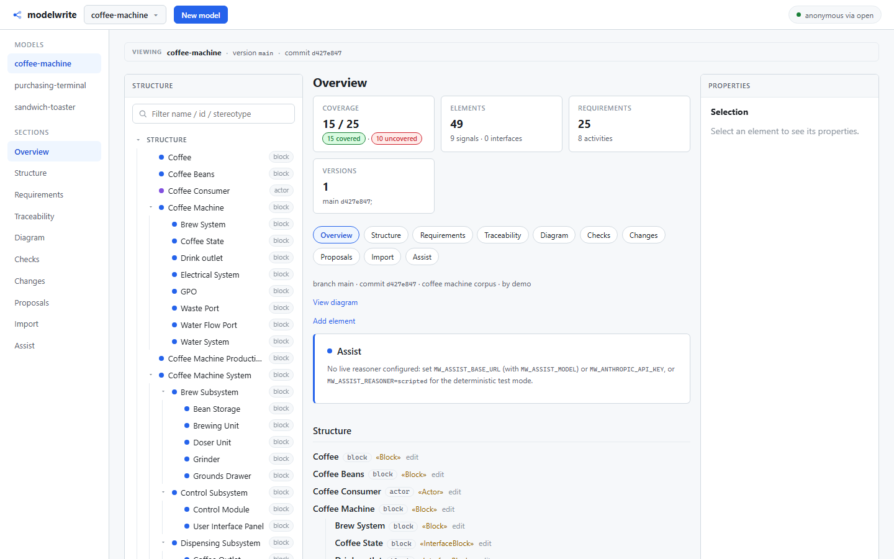
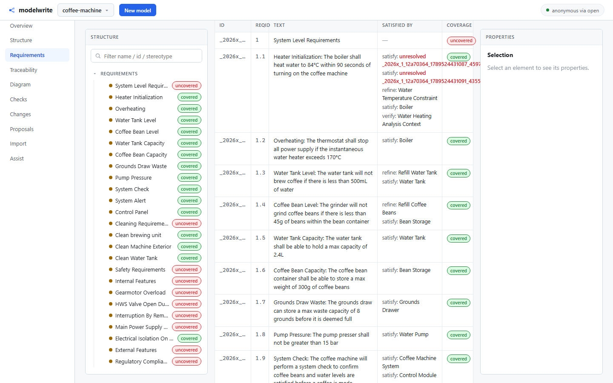

Most systems engineering teams accept a migration on the vendor’s word. There is no
alternative on offer: a fidelity claim arrives in a slide deck, demonstrated on a model you did
not choose. But a fidelity claim cannot be checked before the migration, which
means the loss surfaces at acceptance testing, a year after signature, on the desk of the person
who signed it.
Modelwrite turns that claim into a record you can run yourself. The round-trip gate compares
two models, names every element and edge that did not survive, and writes the result to a
deterministic evidence file. A lossy migration is refused until a human accepts the specific
loss, by name.
Proven today: the round-trip gate, the model repository and the workbench, each with a
committed record. Not proven: a complete migration off MagicDraw. The measured losses are
on this page, not in a footnote.
OKF 1.0
gate 0.1.0
AGPL-3.0-or-later
SQLite or PostgreSQL
Docker, Compose, Helm
air-gapped
01 / Evidence
The evidence, before the claims
Two files are committed to this repository. CI regenerates both on every push and fails the
build if a single hash moves, so what follows is the output of the code in the same commit, not a
snapshot taken once and left there.
Both runs use the coffee-machine corpus in
sample/corpus/coffee-machine. Neither record contains a timestamp: dates appear in
filenames only, so a re-run is either byte-identical or it is a bug. That is what makes the result
citable.
02 / Measured
Measured on a real vendor model, and the number is not flattering
The first real vendor model put through the reader is a MagicDraw SysML model. Its
com.nomagic.magicdraw.uml_model.model entry holds a 193 KB XMI document. This
is what came out.
252blocking content losses — 124 unmappable, 128 lossy, every one named
Importing it produces 41 structure elements (the Blocks), 25 requirements, 66 graph nodes and
95 graph edges. It also produces 252 blocking content losses: 124 constructs that cannot be
mapped, and 128 values that would be dropped. Requirements and their traceability are carried,
where the first measurement carried none. Ports, Operations, Associations, visibility and other
attributes are still reported as unmappable: named, never dropped in silence, but not carried.
Migrating a MagicDraw or CATIA Magic model without those 252 losses is not supported yet.
Named is not the same as carried. An unmappable loss is reported so you can decide about it.
It is still a loss, and this page will not round it down.
Reproduce the measurement. It prints the counts above, not a summary of them:
cargo test -p mw-binding-xmi --test real_magicdraw -- --nocapture
03 / Capabilities
What works today
Every card carries its own status, and a number where a number exists. Nothing here is a
roadmap item dressed as a feature: what is not built is in the next section, at the same weight
as this one.
Works
Model repository
Content-addressed blobs, a deterministic commit hash, section-scoped diffs, three-way merge
with a real least-common-ancestor, element locks as leases, an append-only audit log written
inside the mutation transaction, and identity with roles.
Works
Round-trip gate
Zero element, edge, attribute or document-field loss. Graph integration, optional strict
coverage, and deterministic evidence records that regenerate byte for byte.
Works
Workbench
Server-rendered HTML and inline SVG, served by the same service that holds the model.
0 external requests
Partial
Interoperability
A binding contract, a SysML v1 XMI reader, and migration as a gated operation: the source
artifact is retained content-addressed before anything else, fidelity is measured, and a lossy
migration is refused until the specific loss is accepted by name.
Partial
Agent loop
A Reasoner trait, proposals a human reads, agent actions distinguishable in the audit log,
and an enforced rule that an agent cannot write. A human with the write role accepts a proposal
from the proposals page, and the commit records both parties.
Works
Governance
Commit provenance recorded as authored, imported or unknown. Migration rules enforced at the
commit path, and a check record written per commit.
Works
Analytics
Portfolio compliance, cost joins with weakest-link confidence, and exact decimal money:
scaled integers, no floating point.
04 / Limits
What it does not do
Each of these is a limit of the current release, and each one is checkable from the repository.
x
An agent cannot write.
It proposes. Only a human with the write role accepts a proposal into a commit, and the
resulting commit records both parties. An agent token cannot hold a write or admin role.
x
There is no numeric or physical simulation.
Model-level analysis and simulation are supported: coverage, traceability, composition and
process. FEA, thermal and fluid solvers are not part of this platform and are not planned.
Modelwrite reasons about the model, not about the physics.
x
Real vendor migration is not complete.
A 36 MB Cameo export — the Thirty Meter Telescope model, 362 blocks, 633 edges
— imports and round-trips exactly, and reports 45,725 named losses for the constructs it
does not carry. Named rather than dropped in silence. A model of that size is not yet fully
migrated, and SysML v2 textual notation is carried as a viewer: it reads, it does not write
back.
x
The native XMI-to-OKF direction is not independently measured.
The gate measures the binding’s own OKF-to-XMI-to-OKF round trip. The read rests on
the binding’s self-reported loss report, not on an independent golden corpus.
x
There is no CAD or geometry authoring.
Modelwrite integrates with CAD rather than replacing it. The 3D side of the CATIA
portfolio is out of scope by design, and so is becoming a general-purpose drawing tool.
05 / The workbench
The workbench
Server-rendered HTML and inline SVG, served by mw-server. No framework, no build
step, nothing fetched from the network at page load. These are captures of the running
service.

Coverage at a glance. 15 of 25 requirements covered, 10 uncovered and named,
49 elements, 25 requirements. The numbers on this screen come from the same engine the gate
uses.

Traceability, element by element. Each requirement carries its REQID, its
text, what satisfies it, and whether it is covered. The uncovered ones are listed rather than
summarised into a percentage.
06 / Architecture
Architecture
The engine crates are the contract. The server, the CLI and every connector build on them, and
nothing bypasses the OKF crate and the gate.
Clients
Web workbench: server-rendered HTML and inline SVG
mw command line and the CI runner
MCP clients and AI agents
REST integrations
mw-serverAGPL-3.0-or-later
HTTP API and the workbench UI
Commits and branches · three-way merge · locks as leases · audit log
Identity and roles · gate · migration · agent proposals and acceptance
Governance · analytics
Storage: SQLite for one user, PostgreSQL for a team
The Rust crates are not published to crates.io. Both declare publish = false in
their manifests, so cargo install will not work. Build from the repository. You need
Rust stable via rustup, and Python 3.12 or later for the judge harness.
Build the crates
The service is mw-server. The CLI is mw-cli, which builds the
mw binary.
cargo build --workspace
cargo test --workspace
cargo run -p mw-server
The service runs in open mode unless you configure authentication.
Open mode means an anonymous admin. The image refuses to start
that way unless MW_ALLOW_OPEN=yes is set, so for anything shared, set
MW_AUTH_TOKEN or MW_AUTH_JWKS instead. The Helm chart does not do TLS,
backups or high availability: see deploy/README.md for what it leaves to you. A
JWKS file is read once at startup, so adding or removing a signing key needs a restart.
08 / Numbers
Numbers you can check
Every figure below has the command that produced it. If one does not reproduce, that is a bug
and it should be reported as one.
501workspace tests pass, 0 fail, 24 PostgreSQL tests marked ignored in that run
99corpus graph nodes, 165 edges, one component, 0 isolated
The test count comes from cargo test --workspace --no-fail-fast at the repository
root. The 24 ignored tests are the PostgreSQL backend suite, which the postgres CI
job runs against a real PostgreSQL 16 service container. The browser job builds the
service and drives it with Playwright end-to-end tests; msrv rebuilds each layer at
the toolchain floor its manifest declares, rather than at stable. The corpus is
sample/corpus/coffee-machine, pinned by tests and by the evidence annex: 99 graph
nodes, 165 graph edges, 25 requirements, 49 blocks, 9 signals, 8 activities, one connected
component and no isolated nodes.
The evidence records are not maintained by hand. The engine CI job regenerates
both and diffs them against the committed files, so a new timestamp or a nondeterministic
iteration order anywhere in the gate fails the build.
09 / Licence
Licence and governance
The engine crates and the server are AGPL-3.0-or-later. The OKF interchange
format, the importers and the exporters are Apache-2.0. The split is project
policy, stated in CONTRIBUTING.md: importers and exporters ship under Apache-2.0 and
the engine stays AGPL-3.0-or-later. The reference implementation of OKF lives in the AGPL
engine.
Commercial use follows the documented open-core pattern: a private business repository
alongside the public engine, the evidence annex, and the rule packs. What you install is the
thing you can read.